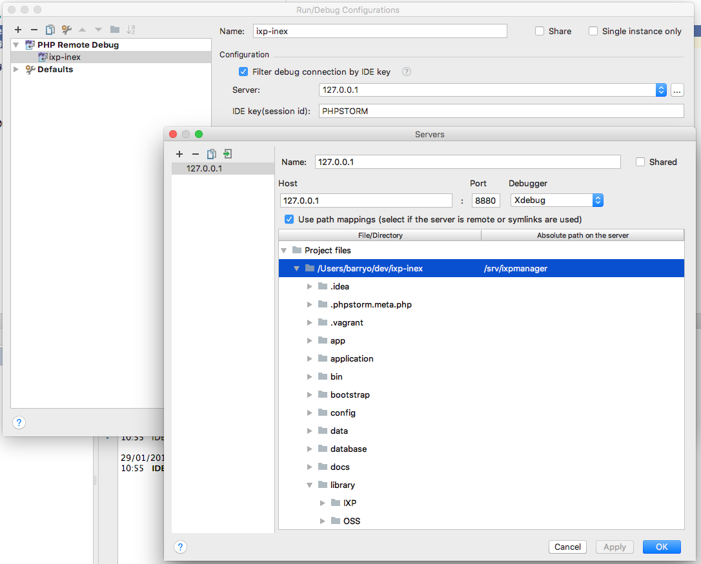

Docker
For development purposes, we have both Docker and Vagrant build files.
This page on Docker for IXP Manager development should be read in conjunction with the official IXP Manager Docker repository. While that repository is not for development purposes, the terminology and container descriptions apply here also.
TL;DR Guide to Get Docker Running
If you want to get IXP Manager with Docker up and running quickly, follow these steps:
- Install Docker (see: https://www.docker.com/community-edition)
-
Clone IXP Manager to a directory:
3. Copy the stock Docker/IXP Manager configuration file and default database:git clone https://github.com/inex/IXP-Manager.git ixpmanager cd ixpmanagercp .env.docker .env cp tools/docker/containers/mysql/docker.sql.dist tools/docker/containers/mysql/docker.sql -
Spin up the Docker containers
docker-compose -p ixpm up -
Access IXP Manager on: http://localhost:8880/
-
Log in with one of the following username / passwords:
-
Admin user:
docker / docker01 - Customer Admin:
as112admin / as112admin - Customer User:
as112user / as112user
General Overview
As the IXP Manager ecosystem grows, it becomes harder and harder to maintain ubiquitous development environments. Docker is ideally suited to solving these issues.
The multi-container Docker environment for developing IXP Manager builds an IXP Manager system which includes:
- a custom MySQL database container (from mysql/5.7).
- the complete IXP Manager application built on the php/7.3-apache base. This has been preconfigured with some customers, routers, switches, etc. to match the following containers.
- two emulated switches via SNMP endpoints (using the excellent SNMP Agent Simulator via tandrup/snmpsim);
- a mail trap with a web-based frontend to capture and analyse all emails sent by IXP Manager (thanks to schickling/mailcatcher).
- a mrtg container to query the switches and build up mrtg log files / graphs (via cityhawk/mrtg).
- a Bird-based route server pre-configured for 3 x IPv4 and 2 x IPv6 sessions. This also includes our Bird's Eye looking glass which has been integrated into rs1 container and configured into the IXP Manager container.
- five Bird-based route server clients complete with routes and a route server session.
Useful Docker Commands
The following are a list of Docker commands that are useful in general but also specifically for the IXP Manager Docker environment.
Note that in our examples, we set the Docker project name to ixpm and so that prefix is used in some of the below. We also assume that only one IXP Manager Docker environments is running and so we complate Docker container names with _1.
# show all running containers
docker ps
# show all containers - running and stopped
docker ps -a
# stop a container:
docker stop <container>
# start a container:
docker start <container>
# we create a 'ixpmanager' network. Sometimes you need to delete this when
# stopping / starting the environment
docker network rm ixpm_ixpmanager
# you can copy files into a docker container via:
docker cp test.sql ixmp_mysql_1:/tmp
# where 'ixmp_mysql_1' is the container name.
# reverse it to copy a file out:
docker cp ixmp_mysql_1:/tmp/dump.sql .
# I use two useful aliases for stopping and removing all containers:
alias docker-stop-all='docker stop $(docker ps -a -q)'
alias docker-rm-all='docker rm $(docker ps -a -q)'
# You can also remove all unused (unattached) volumes:
docker volume prune
# WARNING: you might want to check what will be deleted with:
docker volume ls -f dangling=true
Development Use
As above, please note that in our examples, we set the Docker project name to ixpm and so that prefix is used in some of the below. We also assume that only one IXP Manager Docker environments is running and so we complete Docker container names with _1.
For most routine development use, you only need two containers usually:
docker-compose -p ixpm up mysql wwwIf you are sending emails as part of your development process, include the mail catcher:
docker-compose -p ixpm up mysql www mailcatcherMySQL Database
When the mysql container builds, it pre-populates the database with the contents of the SQL file found at tools/docker/containers/mysql/docker.sql. This is not present by default and is ignored by Git (to ensure you do not accidentally commit a production database!).
A default SQL database is bundled and should be placed in this location via:
cp tools/docker/containers/mysql/docker.sql.dist tools/docker/containers/mysql/docker.sqlYou can put your own database here also. If you do, you will need to rebuilt the mysql contain:
docker-compose build mysqlYou can access the MySQL database via:
docker exec -it ixpm_mysql_1 mysql -i ixpmanagerAnd you can get shell access to the container with:
docker exec -it ixpm_mysql_1 bashYou can also connect to the MySQL server from your local machine using tools such as the standard MySQL client, TablePlus or Sequel Pro with the following settings:
mysql --protocol=TCP --port 33060 -u rootWeb Server
Note that the www container mounts the IXP Manager development directory under /srv/ixpmanager. This means all local code changes are immediately reflected on the Docker web server.
The Dockerfile used to build the www container can be found at tools/docker/containers/www/Dockerfile.
You can access the container with:
docker exec -it ixpm_www_1 bashMailcatcher
We include a mailcatcher container which catches all emails IXP Manager sends and displays them on a web frontend. Ensure this container is started by either:
# start all containers:
docker-compose -p ixpm up
# start mailcatcher with (at least) mysql and www:
docker-compose -p ixpm up mysql www mailcatcherThe .env.docker config contains the following SMTP / mail settings which ensure emails get send to the mailcatcher:
MAIL_HOST=172.30.201.11
MAIL_PORT=1025You can then view emails sent on: http://localhost:1080/
Emulating Switches
ixpm_switch1_1 and ixpm_switch2_1 emulate switches by replaying SNMP dumps from real INEX switches (with some sanitisation). The OIDs for traffic have been replaced with a dynamic function to give varying values.
From the www container, you can interact with these via:
$ docker exec -it ixpm_www_1 bash
# ping switch1
...
64 bytes from switch1 (172.30.201.60): icmp_seq=1 ttl=64 time=0.135 ms
...
# ping switch2
...
64 bytes from switch2 (172.30.201.61): icmp_seq=1 ttl=64 time=0.150 ms
...
# snmpwalk -On -v 2c -c switch1 switch1 .1.3.6.1.2.1.1.5.0
.1.3.6.1.2.1.1.5.0 = STRING: "switch1"
# snmpwalk -On -v 2c -c switch2 switch2 .1.3.6.1.2.1.1.5.0
.1.3.6.1.2.1.1.5.0 = STRING: "switch2"You'll note from the above that the hostnames switch1 and switch2 work from the www container. Note also that the SNMP community is the hostname (switch1 or switch2 as appropriate).
The packaged database only contains switch1. This allows you can add the second switch via http://localhost:8880/switch/add-by-snmp by setting the hostname and community to switch2.
If you want to add new customers for testing, add switch2 and then use interfaces Ethernet 2, 8, 13 and 6 and 7 as a lag as these have been preset to provide dynamic stats.
Route Server and Clients
The containers include a working route server (ixpm_rs1_1) with 3 IPv4 clients (ixpm_cust-as112_1, ixpm_cust-as42_1, ixpm_cust-as1213_1) and and 2 IPv6 clients (ixpm_cust-as1213-v6_1, ixpm_cust-as25441-v6_1). IXP Manager also includes a working looking glass for this with Bird's Eye installed on the route server.
You can access the Bird BGP clients on the five sample customers using the following examples:
# access Bird command line interface:
docker exec -it ixpm_cust-as112_1 birdc
# run a specific Bird command
docker exec -it ixpm_cust-as112_1 birdc show protocolsThe route server runs an IPv4 and an IPv6 daemon. These can be accessed via the looking glass at http://127.0.0.1:8881/ or on the command line via:
# ipv4 daemon:
docker exec -it ixpm_rs1_1 birdc -s /var/run/bird/bird-rs1-ipv4.ctl
# ipv6 daemon:
docker exec -it ixpm_rs1_1 birdc6 -s /var/run/bird/bird-rs1-ipv6.ctlIn this container, Bird's Eye can be found at /srv/birdseye with the web server config under /etc/lighttpd/lighttpd.conf.
We include the IXP Manager scripts for updating the route server configuration and reconfiguring Bird:
# get shell access to the container
docker exec -it ixpm_rs1_1 bash
# all scripts under the following directory
cd /usr/local/sbin/
# reconfigure both daemons:
./api-reconfigure-all-v4.sh
# reconfigure a specific daemon with verbosity:
./api-reconfigure-v4.sh -d -h rs1-ipv4Mrtg / Grapher
For developing / testing Grapher with Mrtg, we include a container that runs Mrtg via cron from a pre-configured mrtg.conf file.
NB: please ensure to update the GRAPHER_BACKENDS option in .env so it includes mrtg as follows:
GRAPHER_BACKENDS="mrtg|dummy"The configuration file matches the docker.sql configuration and can be seen in the IXP Manager source directory at tools/docker/mrtg/mrtg.cfg.
You can access the Mrtg container via:
docker exec -it ixpm_mrtg_1 shWe also install a script in the root directory of the container that will pull a new configuration from IXP Manager. Run it via:
docker exec -it ixpm_mrtg_1 sh
cd /
./update-mrtg-conf.sh
# or without entering the container:
docker exec -it ixpm_mrtg_1 /update-mrtg-conf.shIt will replace /etc/mrtg.conf for the next cron run. It also sets the configuration not to run as a daemon as cron is more useful for development.
Managing Dockerfile
In this example, we look at the ixpmanager/www Docker image and update it from base php:7.0-apache to php:7.3-apache:
cd cd tools/docker/containers/www
# replace:
# FROM php:7.0-apache
# with:
# FROM php:7.3-apache
docker build .
# or tag with: docker build -t ixpmanager/www:v5.0.0
docker push
# if you're not logged in, use: docker loginDo not forget to update your docker-compose.yml files to reference the new tag.
Dev Tool Integrations
NB: these tools and integrations are not IXP Manager specific but rather the typical Docker / PHP development tool chain. Please use support forums for the relevant sections / tools rather than contacting the IXP Manager developers directly.
PHP Storm and Xdebug
We are big fans of PhpStorm at IXP Manager DevHQ. One key feature is PhpStorm's integration with PHP Xdebug. We of course also need this to work with Docker.
Some background information on Xdebug is provided below but you are expected to be familiar with the Xdebug documentation on remote debugging.
The way interactive remote debugging works with Xdebug is as follows:
- Enable remote debugging on the PHP server (
php.inisettings on thewwwcontainer). - Your browser, with a suitable plugin, includes a Xdebug parameter to signal you want remote debugging started for this request (either a GET, POST or Cookie setting).
- PHP Xdebug connects to the configured remote debugger (PhpStorm in our case) allowing you to set break points, step through instructions, view variable contents at a point in time, etc.
To get this working with Docker, we need to work through each of these steps.
1. Enable Remote Debugging in the Docker Container
If you examine the www container Dockerfile in the IXP Manager source under tools/docker/containers/www/Dockerfile, you will see that we:
- build the PHP Xdebug extension (
pecl install xdebug). - configure in the container file
/usr/local/etc/php/conf.d/local-ixpmanager-xdebug.inias follows:
[xdebug]
zend_extension=/usr/local/lib/php/extensions/no-debug-non-zts-20151012/xdebug.so
xdebug.remote_enable=1
xdebug.remote_port=9001
xdebug.remote_autostart=0
xdebug.idekey=PHPSTORM
xdebug.profiler_enable=0
xdebug.profiler_enable_trigger=1
xdebug.profiler_output_dir=/srv/ixpmanager/storage/tmp
xdebug.auto_trace=0
xdebug.trace_enable_trigger=1
xdebug.trace_output_dir=/srv/ixpmanager/storage/tmpNote that the zend_extension may change as it is dynamically set by the build script. We also chose port 9001 rather than the default of 9000 due to local conflicts with common tool chains.
The one key element that is missing in the INI is the remote debugger IP address. This needs to be set to your development computer's LAN address (there are other options but this works best in practice). Once you know this address (say it's 192.0.2.23), set the following in the ${IXPROOT}/.env:
# For PHP xdebug, put in the IP address of your host
DOCKER_XDEBUG_CONFIG_REMOTE_HOST=192.0.2.23When you start the Docker environment from $IXPROOT using docker-compose with something like:
cd $IXPROOT
docker-compose -p ixpm up mysql wwwthen docker-compose will use this setting from the .env file and it will be passed through the Xdebug.
2. Install a Xdebug Plugin on Your Browser
Some recommended plugins from the Xdebug documentation on remote debugging are these: Firefox, Chrome, Safari. It can also be enabled manually using a GET parameter - see the Xdebug documentation.
The only required parameter is the session key. For PhpStorm, the default is PHPSTORM unless you have configured it differently (see step 3 below).
The PHP Xdebug browser plugins allow you to enable debugging on a per request basis. See the Firefox link above to the plugin homepage for screenshots (as of 2018-01 at least).
3. Configure PhpStorm
PhpStorm have their own documentation for Xdebug. The short version to match the above two steps is:
- in PhpStorm, open Preferences
- choose Languages & Frameworks -> PHP -> Debug.
- in the Xdebug section:
- set the port to 9001
- check Can accept external connections
- apply these changes
You now need to create a Run/Debug Configuration. This is so you can map file paths on the remote system (www container) to your local development files:
- under theRun menu, select Edit Configurations...
- in the resulting Run/Debug Configurations window, select the 'add' button on the top left
- choose to add a new PHP Remote Debug configuration
- configure the directory mapping as per this screenshot:

- you should see this new configuration selected on the top right (if not, please refer to PhpStorm documentation)
- under the Run menu, click Start listening for PHP Debug connections
For testing, set a break point in public/index.php and access your development IXP Manager using your new browser plugin. You should be able to step through each statement and - presuming your mappings are correctly set up - step into any file in the project.
Profiling and Function Traces
You may have noticed in the Xdebug configuration above, we have allowed for the triggering of function traces and profiling also. The browser plugins should support these - certainly the Firefox one does (leave the trigger key blank in both cases).
When you request an IXP Manager page via Firefox with profiling enabled, you will find the cachegrind file in $IXPROOT/storage/tmp on your own system You can then view this in PhpStorm via the menu Tools -> Analyze Xdebug Profiler Snapshot....
Function traces can be found in the same directory - these are just text files.